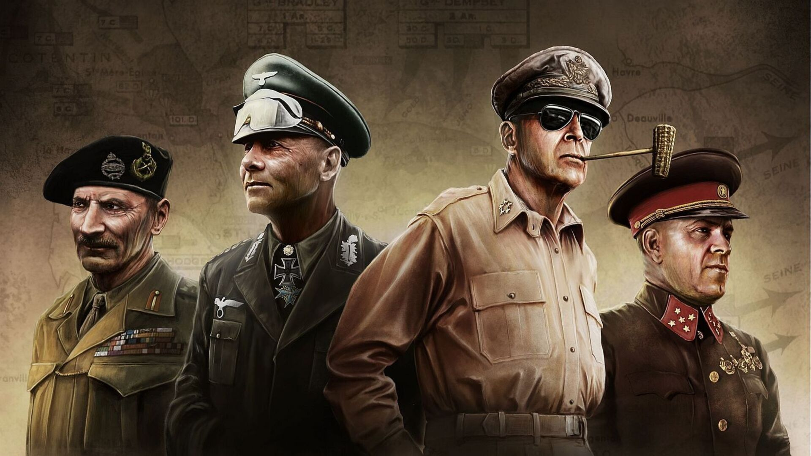
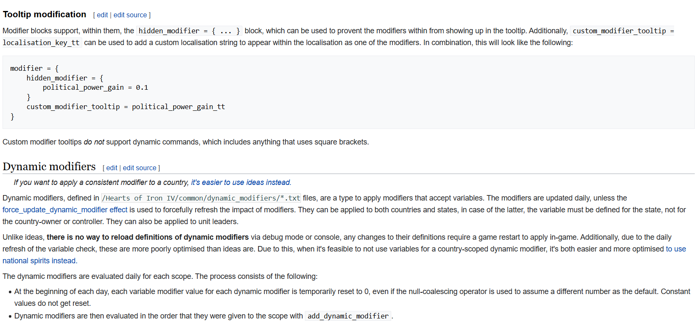
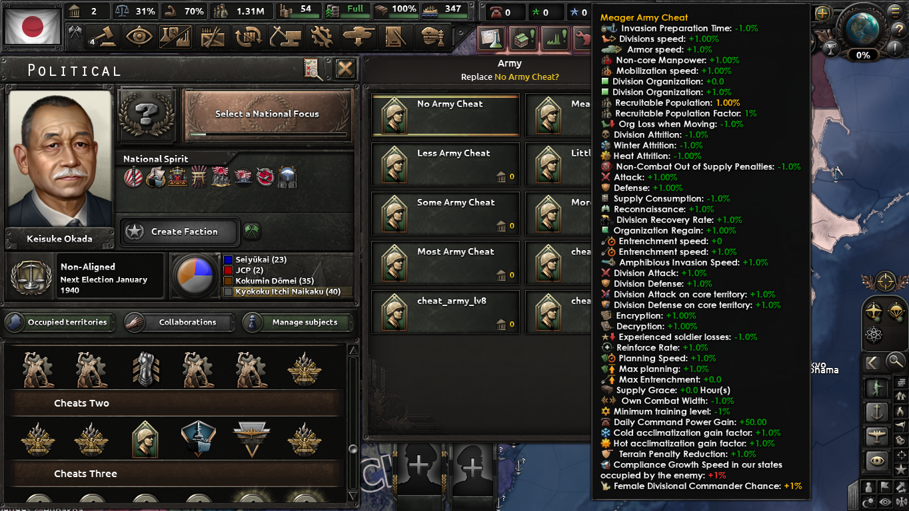

Project Details
HOI4 Vanilla Modding
This project was developed using the official modding framework of
:contentReference[oaicite:0]{index=0}.
The mod relies entirely on Paradox Script (.txt) and vanilla-compatible systems such as
modifiers, national spirits, events, and decisions.
The goal is not to overhaul the base game, but to extend it through learning-focused
enhancements that help new players understand core mechanics like army management,
production chains, construction planning, political systems, and diplomacy.
Workflow
Design Planning
Game Mechanics Analysis
Script Implementation
Balancing & Adjustment
Compatibility Testing

Hearts of Iron IV – Vanilla Learning & Helper Mod
This project is a learning-focused helper mod for Hearts of Iron IV (Vanilla), designed to reduce the steep learning curve commonly faced by new players. The mod introduces optional buffs and event-based tools that allow players to explore game systems without excessive micromanagement or frustration.
Core gameplay areas enhanced by this mod include army performance, production efficiency, construction speed, political power generation, and stability management. Each modifier is carefully balanced to support experimentation rather than permanently breaking immersion or game difficulty.
From a technical perspective, the mod is built using a modular structure. Events, decisions, and modifiers are separated into individual files to ensure maintainability and ease of updates when the base game receives new versions. This design approach allows quick compatibility adjustments without rewriting the entire mod.
- Design & Planning
- Game Mechanics Analysis
- Script Implementation
- Balancing & Adjustment
- Testing & Compatibility
The design phase began with analyzing core Hearts of Iron IV mechanics to identify areas that are most challenging for beginners. Based on this analysis, a list of learning-friendly buffs and helper events was defined, focusing on army management, production flow, construction timing, and political systems.
Detailed analysis was conducted on vanilla modifiers, national spirits, and scripted triggers to ensure compatibility. Existing game systems were reused wherever possible, minimizing conflicts and ensuring stable behavior across different countries and start dates. List of Modifier Website

Implementation was carried out using Paradox Script language. Custom events and decisions were created to allow players to activate buffs selectively. Additional features include adding commander traits, generating equipment, injecting resources, and coring neighboring countries for testing purposes.
Each modifier and event was iteratively adjusted to maintain a balance between usability and realism. Buff values were tuned to support learning without creating irreversible advantages that could trivialize gameplay.

Testing was performed using a black-box approach by enabling features in different gameplay scenarios and start dates. The mod is regularly updated to remain compatible with the latest Hearts of Iron IV vanilla versions and is intended primarily for single-player use.
This project is actively maintained and serves as part of my personal portfolio, demonstrating skills in game modding, script-based system design, modular architecture, and long-term maintenance of version-dependent software.
For detailed implementation files and version history, please refer to the GitHub repository.